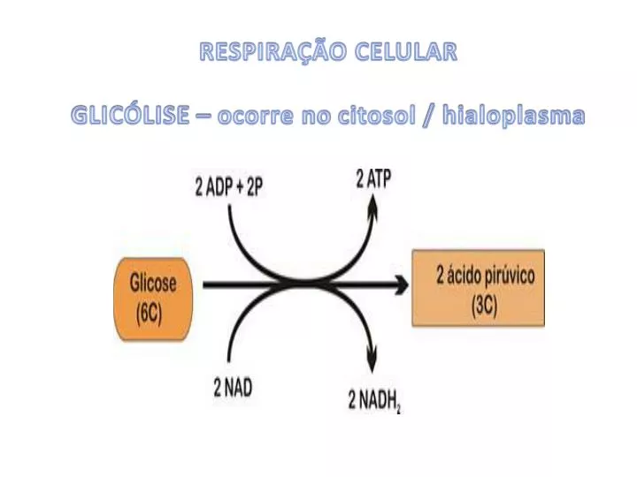

A respiração celular é um fenômeno bioquímico complexo e essencial que ocorre nas células de organismos aeróbicos,
sendo o principal meio pelo qual a energia contida em moléculas orgânicas, como a glicose, é liberada e transformada
em uma forma utilizável, principalmente sob a forma de trifosfato de adenosina (ATP). Esse processo ocorre em três fases
distintas: glicólise, ciclo de Krebs e fosforilação oxidativa, cada uma desempenhando um papel crucial na maximização da produção de ATP.
A primeira etapa, glicólise, ocorre no citoplasma celular. Nesse processo, uma molécula de glicose de seis carbonos
é quebrada em duas moléculas de piruvato de três carbonos, resultando na formação de dois ATP e NADH como subprodutos.
Vale ressaltar que a glicólise não requer oxigênio, tornando-se uma rota metabólica anaeróbica, mas serve como precursor
essencial para as fases subsequentes da respiração celular.
Após a glicólise, o piruvato gerado é transportado para as mitocôndrias, onde se inicia o ciclo de Krebs, também conhecido
como ciclo do ácido cítrico. Nesse ciclo, o piruvato é totalmente oxidado, resultando na liberação de dióxido de carbono. Além disso,
moléculas precursoras de transporte de elétrons, como o NADH e FADH2, são produzidas. O ciclo de Krebs, sendo uma fase central da respiração
celular, contribui para a geração de moléculas energéticas e a completa oxidação da glicose.
A última fase, a fosforilação oxidativa, ocorre na membrana interna da mitocôndria e é composta pela cadeia respiratória e pela ATP sintase.
Os NADH e FADH2 gerados nas fases anteriores transferem elétrons ao longo de uma série de complexos proteicos, conhecidos como cadeia respiratória.
Esse transporte de elétrons é acompanhado pela liberação de prótons no espaço intermembranar, criando um gradiente de prótons.
A ATP sintase, localizada na membrana interna mitocondrial, utiliza esse gradiente de prótons para sintetizar ATP a partir de ADP e fosfato inorgânico.
Esse processo de fosforilação oxidativa é a principal fonte de produção de ATP durante a respiração celular e representa a convergência final dos eventos
bioquímicos que começaram com a glicólise.
A respiração celular é, portanto, uma cascata de eventos intrincados que otimizam a extração máxima de energia dos substratos orgânicos. Além da produção de ATP, esse processo também desempenha um papel crucial na regulação do equilíbrio redox celular, garantindo a eficiência metabólica e a homeostase energética nas células. Assim, a compreensão detalhada da respiração celular é fundamental para a biologia celular e fornece insights valiosos para o desenvolvimento de tratamentos médicos e a otimização de processos biotecnológicos.